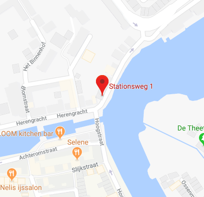

<!--
  Generated template for the PatientlocatiePage page.

  See http://ionicframework.com/docs/components/#navigation for more info on
  Ionic pages and navigation.
-->
<ion-header text-center>

  <ion-navbar>
    <ion-title>Huidige locatie</ion-title>
  </ion-navbar>

</ion-header>


<ion-content padding>

  <div *ngIf="showMeH1">
    <h2>Er is hulp onderweg, blijf waar u bent.</h2>
  </div>

  <div *ngIf="hideMe">
    <ion-list>
    
      <ion-item>
        <ion-label floating>Huidige adres</ion-label>
        <ion-input type="text" name="locatie" value={{locatie}}></ion-input>
      </ion-item>
  
    </ion-list>

    <button ion-button text-wrap (click)="doGetLocation()">
      <ion-icon name="navigate"></ion-icon>
      Ik ben niet op een adres, ga naar de locatie van dit apparaat
    </button>
  </div>

  <ion-input placeholder="type uw locatie" autocomplete="on"></ion-input>

  <agm-map [latitude]="lat" [longitude]="lng" [zoom]="zoom" >
    <agm-marker [latitude]="lat" [longitude]="lng">
      <agm-info-window>
        <p>U bevindt zich hier.</p>
      </agm-info-window>
    </agm-marker>

    

  </agm-map>

  <div *ngIf="showMeCard"> 
    <ion-card class="adv-map">

      <div style="position: relative">
        
      </div>
      <ion-item>
        <ion-icon color="subtle" large item-start name='information-circle'></ion-icon>
        <h2>Stationsweg 1</h2>
        <p>1382 AA Weesp</p>
      </ion-item>
    
    </ion-card>
  </div>

</ion-content>
